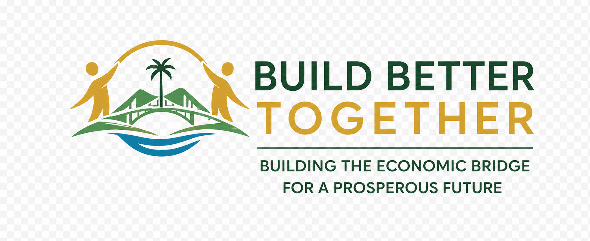

Start the ConversationA privately underwritten 90-day pilot to build real economic bridges between locals and expats in one of Costa Rica's most beloved regions. Before the divide becomes permanent.
"The social warmth is real. The markets at Feria, the bilingual coffee hours, the friendships across language lines. But underneath that warmth, two separate economic realities are quietly hardening."
Locals and expats live alongside each other. They share roads, restaurants, and a genuine affection for this place. But they increasingly do not share economic opportunity, business infrastructure, or the kind of cross-cultural collaboration that builds lasting shared prosperity.
Left unaddressed, this is how a region becomes socially warm but structurally divided. This is how paradise becomes two parallel worlds.
Three forces are converging in 2026 that make this the right moment for a serious intervention. Not next year. Now.
AI is reshaping how small businesses compete. Language barriers are breaking down in ways that create entirely new collaboration opportunities. And a new generation of families is choosing to root here permanently. The economic patterns they inherit are being set right now. This is the window.
Not a workshop series. Not a community circle. Not a nonprofit campaign. A structured, professionally-led regenerative business and economic bridge initiative for South Pacific Costa Rica.
"This is not inspiration. It is infrastructure. The economic kind that actually changes how a community functions."
This is not an open-ended initiative. It is a defined 90-day pilot with a clear scope, a specific budget, and measurable outcomes. It is designed to prove the model and earn its own continuation.
We are looking for a small number of aligned private funders. Individuals who already care about this region, who have the means to act, and who want to see something real get built.
The economic patterns forming right now in Ojochal and Uvita are the patterns your children will inherit. The question is not whether development will happen here. It will. The question is what kind.
Rick Broider is a systems strategist and community architect who has spent two decades helping organizations translate vision into operational reality. He is not pitching this from a distance. He lives here. His partner Terra teaches at Life Project School, right next door to Happiness Project, in Ojochal. He is building long-term in this community.
This is not a vague vision. Here is exactly what a full pilot underwriting delivers.
Happiness Project in Ojochal is the most trusted bridge institution in Costa Ballena. They have built something rare: genuine bilingual community infrastructure, real trust across cultural lines, and programming that serves both locals and expats.
If this resonates, start a conversation. No commitment. No pressure. A real exchange between aligned people who care about this region's future.
Prefer to reach out directly?
QuickLaunchConsulting.com